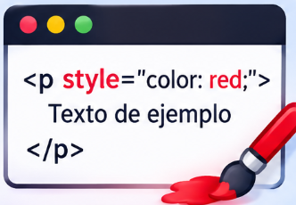

¿Qué es la especificidad en CSS?
La especificidad es el sistema que utiliza CSS para determinar qué regla de estilo tiene prioridad cuando varios selectores intentan modificar el mismo elemento HTML.
Cada selector tiene un nivel de prioridad. Cuanto más específico sea un selector, mayor será su prioridad frente a otros selectores que intenten aplicar estilos al mismo elemento.
Los niveles principales de especificidad son: estilos en línea, identificadores, clases y pseudoclases, y elementos y pseudoelementos.

1. Estilos en línea
Son los estilos que se escriben directamente dentro de la etiqueta HTML mediante el atributo style. Tienen una prioridad alta frente a las reglas normales de las hojas de estilo.
Ejemplo:
<p style="color: red;">
Texto de ejemplo
</p>2. Identificadores (ID)
Los identificadores permiten seleccionar un elemento HTML específico mediante el atributo id. En CSS se representan utilizando el símbolo numeral (#).
Ejemplo:
#titulo {
color: blue;
}3. Clases, atributos y pseudoclases
Estos selectores permiten identificar elementos por medio de clases, atributos o estados específicos. En este nivel se encuentran las clases (.), los selectores de atributos y las pseudoclases (:).
Ejemplo:
.texto {
color: green;
}
input:focus {
border: 2px solid blue;
}4. Elementos y pseudoelementos
Este nivel incluye los selectores que identifican etiquetas HTML, como p, h1 o div, y los pseudoelementos, que permiten modificar partes específicas de un elemento.
Ejemplo:
p {
color: black;
}
p::first-letter {
font-size: 30px;
}5. Selector universal
El selector universal se representa con un asterisco (*). Selecciona todos los elementos HTML, pero no aporta valor a la especificidad.
Ejemplo:
* {
margin: 0;
padding: 0;
}Resumen de la especificidad
De mayor a menor prioridad en las reglas normales:
- Estilos en línea.
- Identificadores (ID).
- Clases, atributos y pseudoclases.
- Elementos y pseudoelementos.
El selector universal (*) y los combinadores no aportan especificidad.
Recuerda: cuando dos reglas tienen la misma especificidad, normalmente se aplica la que aparece después en el código, siempre que tengan el mismo origen e importancia.